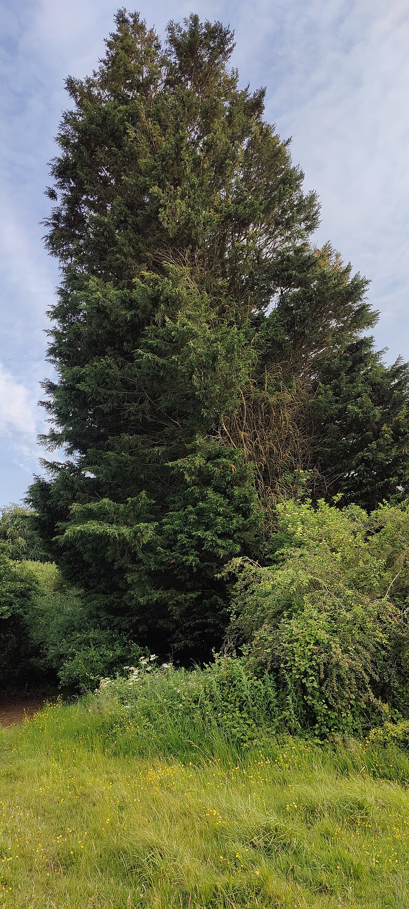

Cupressocyparis — Leyland Cypress (Cupressocyparis)
A hybrid wall of green that grows faster than its enemies can plan around it, shrugs off salt spray and shade, and has outlived the arborists sent to manage it.
Combat flavor
The Juggernaut archetype fits perfectly: blistering advance speed but a shorter operational lifespan than ancient rivals. Its sterile hybrid nature (no offspring) could read as a "no respawn" mechanic — devastating when alive, gone for good when it falls.
Real-world facts
Typical / max height15–21 m typical in cultivation; can reach 40 m in ideal conditions
Lifespan20–50 years (short for a conifer; structurally unstable at old age in confined planting)
WoodAir-dry density ~510 kg/m³; pale yellow-brown, fine even texture, straight-grained — moderately stiff, comparable to Scots Pine but less stiff; durable heartwood
Growth speedFast — up to 90 cm/yr; can reach 15 m in 15 years
Ecology / notable traitsSterile hybrid (Cupressus macrocarpa × Chamaecyparis nootkatensis), so no invasive seed spread; forms impenetrable windbreaks and screens; poor wildlife habitat (little food for native fauna); highly tolerant of salt, wind, and a wide pH range; notorious as a "neighbour dispute" tree due to rapid screening height gain.
Where they grow in Amsterdam
Every pin is a real registered tree in the municipal open-data registry. Clusters show how many trees they hold — zoom in and they split apart down to individual trees.
Gallery
